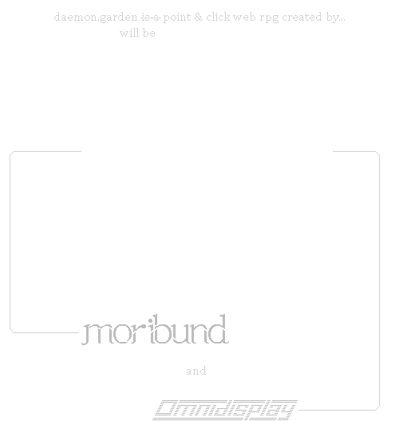
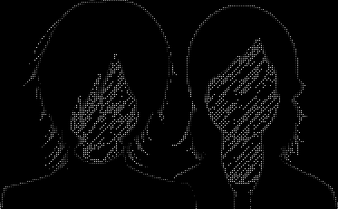

If the eye was given permission to see, no creature would be able to withstand the abundance and ubiquity of the daemons and continue to live unaffected by them.
They are more numerous than we are and they stand over us like mounds of earth surrounding a pit.
Each and every one of us has a thousand demons to his left and ten thousand to his right.
THE DAEMONVEIL protects man from these daemons,
As it says in the verse: "A thousand may fall at your side, and ten thousand at your right hand; they will not approach you"